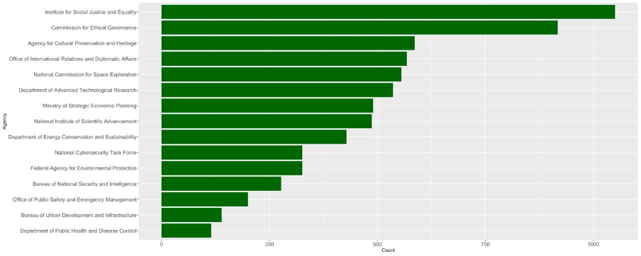
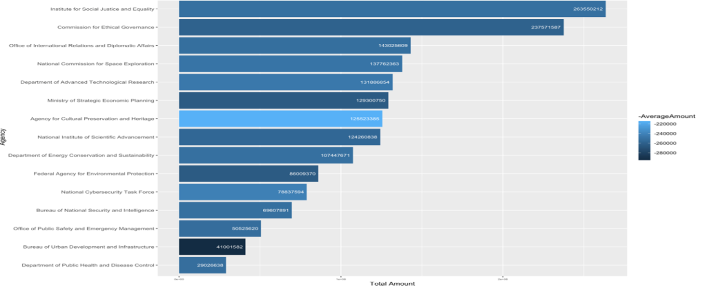
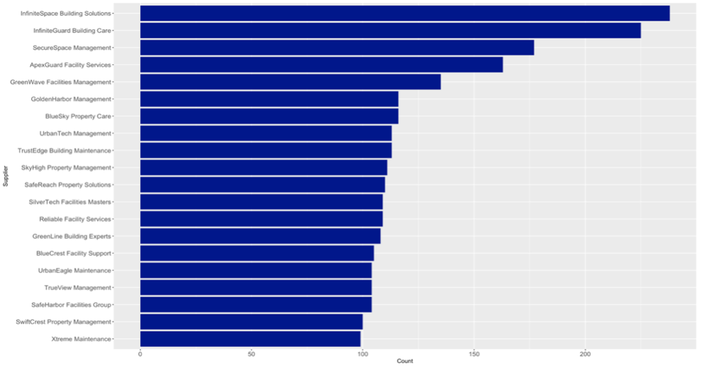
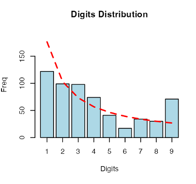
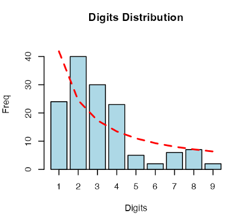
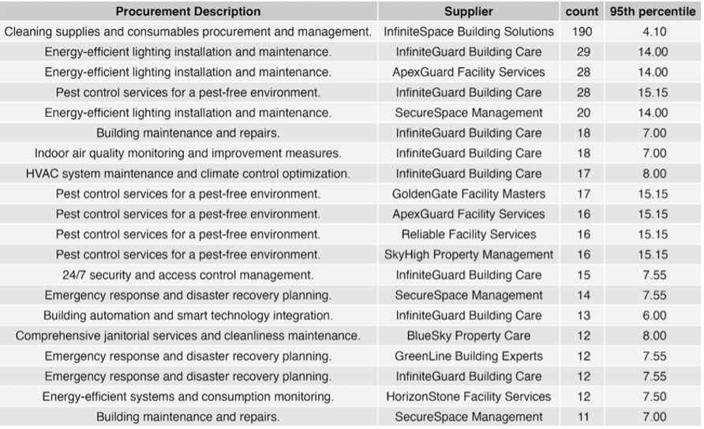

# A tibble: 10 × 8
`S/N` `Procurement Code` Procurem…¹ Agency Procu…² Date Suppl…³ Award…⁴
<dbl> <chr> <chr> <chr> <chr> <date> <chr> <dbl>
1 117 ITQ20170116 SVP Burea… Indoor… 2017-05-08 SafeHa… 9509
2 262 ITQ20170261 SVP Depar… Pest c… 2017-11-01 StarSt… 9072
3 396 ITQ20180087 SVP Burea… Parkin… 2018-04-06 Golden… 9888
4 629 ITQ20190014 SVP Depar… Energy… 2019-01-14 UrbanT… 9998
5 644 ITQ20190029 SVP Burea… Renova… 2019-02-05 EverGr… 9438
6 807 ITQ20190192 SVP Burea… Space … 2019-07-21 SafeRe… 9854
7 1099 ITQ20200144 SVP Depar… Furnit… 2020-08-31 BlueSk… 9161
8 1195 ITQ20210029 SVP Burea… Tenant… 2021-02-10 BlueRe… 9537
9 1316 ITQ20210150 SVP Depar… HVAC s… 2021-08-29 Infini… 9407
10 1392 ITQ20220013 SVP Depar… Emerge… 2022-02-07 Secure… 8069
# … with abbreviated variable names ¹`Procurement Type`,
# ²`Procurement Description`, ³Supplier, ⁴`Awarded Amount`Written_Report
1 Introduction
Understanding the constraints of an organisation, the Central Procurement Agency, to ensure proper checks and prevention of suspicious procurement, the team wanted to paint a realistic image of data sampling and investigating these samples further. To conduct our analysis, the team decided on the R platform as our main tool for both statistical analysis and visualisation. Exploratory data analysis was first conducted to better understand the dataset given to us. Given that there were various descriptions and agencies within the dataset, the team felt that Rshiny should be utilised to consolidate our analysis and basic visualisation, conditional on inputs such as year, agency or description. This allowed us to visualise data within a user-input application and to better set the direction of our analysis. The team managed to find some errors and key statistics from this part of our analysis. The team then set the methodologies used for our analysis. Referencing to Nigrini, & Mittermaier (1997)[1], the team decided on using Benford's Law to sample out potentially suspicious leading number distribution and explain the limitations of the Law. To solve this limitation, the team also used the outlier test and rounding test[2] to derive further insights. Methodologies mentioned are benchmarks that can be used to initiate an action to investigate certain agencies specifically. This stance acknowledges the bandwidth of the main organisation in its routine checks of the government sector and the team hopes that the gathered insights would bring value to the individual agencies and Central Procurement agency.
2 Exploratory Data Analysis
Under this section, the team analysed the original dataset to better understand the variables individually. The dataset has 8 variables and from there we found that there are 15 unique government agencies, 20 unique procurement descriptions and 98 unique suppliers. Since the "Procurement Code" provides the unique identifier for each entry, the team first checked whether there were any duplicate entries, to which there were none found.
As the team required the "Awarded Amount" to be in a numeric form for use in both the python and R platform, the team removed the dollar sign and commas within the entry and return just the numbers.
In the next check, the team identified that there were several entries that were misclassified in their "Procurement Type" but were given a unique "Procurement Code". All these entries were misclassified as "ITQ" rather than "SVP". All other entries were classified accurately. Figure I in the appendix shows the misclassified entries after changes were made to their "Procurement Type".
Figure I
We also notice that the "Procurement Code" is generated by the Type, year it was awarded in, and the last 4 digits being uniquely generated. For coherence, the front 3 letters of the code are changed to “SVP" in the final cleaned dataset.
Lastly, the dataset given to us specified a period between 2017 to 2022, to which the team identified 3 entries that were outside the period. Given that the dataset covers awards made between period 2017 to 2022, the three entries should be flagged as a potential fraudulent claim and checked with the agency. The team decided to remove three entries from the dataset as shown in Figure II in the appendix as it could affect our other analysis. As such, our final data set has 6997 entries, 8 columns and the amended "Procurement Code" and "Procurement Type".
# A tibble: 3 × 3
`S/N` `Procurement Code` Date
<dbl> <chr> <date>
1 1 ITQ20160157 2016-07-01
2 6999 ITT20230691 2023-08-15
3 7000 ITT20240605 2024-08-29Figure II
- Key Statistics
a. Agencies with the greatest number of procurements
2 of the 15 agencies, the Institute for Social Justice and Equality, and the Commission for Ethical Governance stood out as the agencies with the greatest number of procurements. The number of procurements differed significantly across the agencies, with the lowest number being made by the Department of Public Health and Disease Control (115 procurements) and the highest number made by The Institute of Social Justice and Equality (1050 procurements). The median number of procurements per agency was 487 and the average number was 467, with a standard deviation of 261.91. With reference to Figure III in the appendix, the Institute for Social Justice and Equality and the Commission for Ethical Governance has highest number of procurements and the highest total value of the procurements. However, on average per procurement, the Bureau of Urban Development is the largest with many of the other agencies averaging at about $250,000.

b. Suppliers with the greatest number of awards
There were 98 suppliers in total for the 6-year period, and the distribution per supplier was unevenly distributed, with an average of 72 and median of 58 procurements awarded to each supplier and a standard deviation of 35.97. The significant difference between the mean and median points to a distribution skewed towards the top, with many procurements concentrated around a few suppliers. The lowest number of awards was given to SwiftTech Facility Solutions (17 awards). The distribution of the procurement awarded amounts of the suppliers is shown in Figure IV.

Figure IV
We then zoomed into the top 20 awardees as shown in Figure V in the appendix and found that 2 other suppliers further stood out: InfiniteGuard Building Solutions and InfiniteSpace Building Care, each with more than 225 awards. The implications of this shall be expounded upon in Section 3.2.
c. WOG Trend over 6 years

The team then analysed the total amount awarded to each procurement description over the years. Generally, there is a slight drop in amount spent from 2019 to 2020 (refer to Figure VI in the Appendix.) We predict that the general drop observed was due to Covid-19 where lockdowns reduced the demand for services to be maintained at offices and community spaces.
However, there were two descriptions, 'space planning' and 'HVAC system' that had a slight increase. Under the assumption that the dataset undergoes current real-world trends, Covid-19 justified the increases as the government had to enforce several Covid-19 regulations such as social-distancing measures. Additionally, particularly 'renovation and remodelling' had a huge decrease by more than 50% from 2019 to 2020. We concluded that the huge decrease could be due to the low demand for renovation services when everyone was under lockdown.
We also noticed that there was a general rise from 2017 to 2018. However, two descriptions clearly stood out, namely 'energy-efficient lighting' and 'pest-control services'. Based on the highlight table above, both had a sudden and huge increase in spending from 2017 to 2018, followed by a gradual decrease from 2018 onwards.
3 Methodology/Insights
This section documents the audit tests that were carried out on the entire dataset. The four tests that we have chosen to administer are the (1) Benford's Law test on the awarded amounts, (2) Outlier test on awarded amounts and procurement instances per supplier and (3) the Round Numbers test.
3.1 Benford’s Law
Benford's Law is used to catch anomalies or fraud in data with the assumption that leading digits with smaller values occur more frequently while bigger values occur less frequently. As the values of the leading number increases from 1 to 9, the frequency should follow a decreasing function.
The rationale for using the Benford's law for our analysis stems from the categorisation of procurement types. With less than $10,000 being Small Value Purchases (SVP), between $10,000 to $100,000 being Invitation to Quote (ITQ) and over $100,000 being Invitation to Tender (ITT), with each category having stricter checks and balances. The team hypothesizes that fraudulent activities would occur near the $10,000 and $100,000 marking to avoid the additional checks required, agencies with a higher frequency of high leading digits are more likely to have suspicious transactions. In addition, we also hypothesize that procurements with smaller values of the leading could also be a potential area of fraud. To avoid hitting the higher category, procurements may be split several times to the same supplier and is considered in our analysis as well. The team acknowledged that non-conformity to Benford's law is not strong enough to suggest that a particular agency is fraudulent but rather it points out potential samples that should be investigated further. Through the analysis, the team found that there were several agencies with suspicious Benford's Law frequencies.

The figure above displays the 1st digit test on the Agency of Cultural Preservation and Heritage. While not perfectly conforming to Benford's Law (red-line), it is generally decreasing in nature till digits 7 to 9. By condensing the data to just values 7 to 9, the team flagged two areas of focus, duplicates and repeated procurements. For duplicates, the team checked on two main variables, procurements made on the same day or procurements made in the same amount. From this, the team identified 13 such procurements. Two were duplicated amounts made to SafeHarbor Facilities Group on the same day and the remaining 11 were made on the same day with varying amounts. 11 of these procurements were made to HorizonStone, `Energy-efficient systems and consumption monitoring`. All 11 claims had amounts between $90,000 to $100,000 which could explain the spike in leading digits 9 in graph above.
Given that procurements were made in large sums, the team set the baseline for procurements with the same description to be not made within the same month. For such procurements, the team set an additional condition that if it’s made to the same supplier, it would be flagged out. Under Appendix XX, there were 6 procurement claims made within 30days of each other to ApexGuard Facility Services for amounts varying between $70,000 to $120,000, all of which are in the year 2019.

The figure above refers to the Bureau of Urban Development and Infrastructure. Using the same methodology, there is a higher number of procurements with leading numbers, 2 and 3 and a distinct increase at leading numbers, 7 and 8. Leading numbers, 7 and 8 were in the 10,000s and had no irregularity. However, leading numbers, 2 and 3, had a combined total of 58 procurements in the `ITT` category. Out of all 139 procurements, 101 were `ITT` and this indicates that 57% of `ITT` procurements are in the $200,000 to $300,000 range. The Bureau of Urban Development has an average number of procurements made across the agencies. In addition, out of 5 procurements above $1,000,000, 4 of them are from the Bureau of Urban Development and Infrastructure. This raises a question of whether their operations are indeed larger than the other agencies which were not clearly specified in the dataset. This will be discussed further on the Recommendation section.
While the checks done on the respective agencies above can be done on the entire dataset, it would be challenging to go through each of them and raise suspicions on the agency. The team acknowledged that repeated procurements could be due to the nature of the work or different projects progressing at the same time within an agency. In addition, the Benford's law does has its limitations, and for one, it does not account for the average procurement amount across the various agencies or the various descriptions. The next test, the Outlier test, sets the threshold for both low and high procurement amounts.
3.2 Outlier Test
The extreme outlier test was selected to check for two things: anomalies in the amounts awarded for each agency, and over-reliance on a particular supplier for each procurement description type across the whole of government.
Anomalous Awarded Amounts
First, the test was carried out on the average awarded amounts per procurement for each agency. The purpose of this test is to identify amounts that lay beyond the norm as they could be a telltale sign of mis entry of data or significant expenditure under the ITQ category.
The data was categorised by agency because the procurement amounts should have little variation within the same agency, if the facility-related expenditure requirements cater to an agency of a constant size. Moreover, spending budgets for each agency should also remain relatively constant over time. Any outliers within each agency detected over the 6-year period could point to major spending events or potentially erroneous entries that should be further investigated.
Using the upper quantiles (75%) and the interquartile ranges (IQR), the team calculated the upper extreme outlier value for each agency. This value was then used as the threshold to detect significantly anomalous data points within each category. The team then filtered the data and found that there were seven data points that lay outside of the upper extreme outlier. A similar test was done on the lower quantiles (25%) and no outliers were found.

While these entries do not belong to the normal range of awarded amounts for the agency, the team acknowledges that the outliers could be an indication that there are larger variations in the spending amounts of these agencies.
A noteworthy finding is that four out of five of these outliers were from the same agency: the Bureau of Urban Development and Infrastructure, between 2017 - 2021. This could be due to periodical major infrastructural development projects awarded to external contractors in line with the agency's mandate, and these might deviate greatly from the agency's day-to-day expenditures.
For the other three outliers, it could be said that there were multiple major procurements in these agencies in the years 2017, 2018, 2020 and 2021. In general, it would be worth recovering the details of the seven procurements for a fuller picture.
Over-reliance on Suppliers
The extreme outlier test was also administered to the number of procurements awarded to each supplier across the whole of government. The same upper quantiles and inter-quartile ranges were used, and the following results were observed.
Another key hypothesis that the team wanted to prove was an overreliance on a select few suppliers. The procurement award statistics in Section 2 had drawn attention to two of them: InfiniteGuard Building Solutions and InfiniteSpace Building Care. To further investigate the value of the procurements, the extreme outlier test was administered to identify abnormally frequent procurements from any supplier(s).
The team first categorised the data into its respective procurement descriptions. Within each description type, the number of awards to each supplier should be evenly distributed to prove that the government has a well-diversified supplier base. At each description level, the team defined the upper limit to be the 95th percentile based on the suppliers who were awarded on that description. The rationale for choosing the 95th percentile was clearly evident over-reliance of the supplier for each description level.
The resulting values point to abnormally frequent procurements from a particular supplier for a given service, and are illustrated in the table below:

These corroborate the findings in Section 2, where Infinite Guard Care and Infinite Space Building Solutions were the top 2 awardees for the 6-year period. In addition, the analysis showed clear over-reliance for the top 20 out of 77 entries, taking the difference between the count and 95th percentile. Specifically, we see that for several procurement description levels, InfiniteGuard Building Care went above the 95th percentile, indicating over-reliance on multiple fronts.
In this situation, these two mentioned awardees should be investigated and evaluated. InfiniteGuard on the other hand, was awarded 190 times, significantly higher than its given 95th percentile, evident of the agency’s over-reliance of "Cleaning supplies" procurements.
3.3 Rounding Test
Another popular test used in audit is the Round Numbers test, which works on the principle that transactions rarely end in round numbers ($10.00) and could be a sign of fabricated values. The team first took notice that the data set was in whole numbers, no values had cents, and this was an indication that it could be rounded to the nearest dollar. For this dataset, the team has chosen to detect awarded amounts that are multiples of 100, as that of 5 and 10 were too common to present as suspicious. Awards that showed up under this test should be further investigated for its procurement description, supplier, and date to detect any signs of repetition and fabrication.
The first 100-multiple test results revealed 75 such awarded amounts, of which 16 belonged to the Commission for Ethical Governance and 15 belonged to the Institute for Social Justice and Equality.

It is worth noting that Institute for Social Justice and Equality and the Commission for Ethical Governance are agencies with the two highest total procurement instances over the 6-year period, which might explain the higher incidence of round numbers. For the 100-multiple amounts under these two agencies, the procurement description that showed up most was "Energy-efficient lighting installation and maintenance" (9 instances), however the description types were relatively evenly spread. The suppliers were also evenly spread, with each of the 52 suppliers having 1-3 procurements that were multiples of 100.
The team then further identified amounts that are multiples of 1000, which would present as extremely rare and hence suspicious. These values would call for more attention and should be investigated in a similar fashion to the 100-multiple amounts. The second round of filtering revealed awarded amounts that were multiples of 1000, and the following five procurements were identified.

Experience has shown that round numbers are often linked to the purchase of goods or services with individual and unique features; used property, plant, and equipment purchases; and charitable or political campaign contributions. Further checks to compare whether these rounded transactions were made relative to similar procurement description within a period of 30 days. The team concluded that there is no clear trend or commonality amongst these awards, except that they occurred between the years 2017-2019. This could imply corners being cut by the office involved in preparing these records during this two-year period, and an in-depth investigation could be done to ascertain the facts of these procurements.
4 Recommendation
4.1 Data Collection Process
The dataset that was presented to us had several errors which includes inaccurate categorisation of procurement type, wrong procurement code and entries that were not within the 2017-2022 period. Furthermore, given that there were very few SVP procurements and that they were all misclassified, it raises the question on whether the data was collected effectively and whether if there was a possibility of missing SVP data. Missing data is a grave fraud hazard as these data points goes untracked and no analysis can even be conducted on them. Our recommendation is to automate the process in how procurement data is collected from the various government agencies. This is under the assumption that this data set was collated from the inputs from all agencies. Errors as mentioned in the Exploratory Data Analysis section can be easily prevented if the process is digitised under one main system and automated with set conditions such as awarded amount limits for accurate categorisation of procurement type.
In addition, the dataset was not in a tidy format to be used in R programming or python. For example, the awarded amount was in character format, "$40,000.00", which was not numeric. Depending on the type of analysis and its required platform, it would be recommended if there is an additional column to suggest the currency of the procurement and leaving the awarded amount as simply 40000. In the event a procurement is made in a foreign currency, the dataset would still be relevant, without needing much change to the system.
4.2 Procurement Method
Under the assumption that the suppliers mentioned in the dataset is non-exhaustive, agencies should be checked on their over-reliance on a particular supplier. One key aspect of the procurement process can be obtained from "known" sources and the team argues that the "known" list of suppliers should be checked regularly to prevent misuse under the pretext of going for a "known" source. The team is in consensus that it would be important to have the agency clarify their position for choosing a supplier over any other supplier. It could be reasons stemming from better quality goods and services or a generally more competitive pricing. For the case of InfiniteSpace Building solutions, it held 190 procurements, and it could be reasons underlying national security concerns since some of these agencies suggest potential national security reasons.
Overall, these reasons should be recorded in the data collection process after approval for better clarity during audit checks. With reference to the SVP procurement, an approving officer should be appointed for the SVP procurements. Acknowledging that human capital cost will increase, there needs to be a balance between accountability and human capital cost. The team therefore proposes to reduce the $10,000 limit to $5,000 and have an approving officer for transactions between $5,000 to $10,000. The approving officer would provide assurance that the claims made are trackable and validated. The rationale behind this proposal is:
1. Appointing an approving officer would reduce the risk of fraudulent activities.
2. Having a lower quantum would reduce the impact of fraudulent activities should it occur.
The insights gathered from the earlier analysis point out several problems that gave rise to suspicious procurements. Referencing to the repeated transactions made within a period of 30 days and the duplicated procurement amounts, it highlights the possibility that the officer who retrieves and the officer who approves, either did not have a clear segregation of duties or were collaborating on the procurement procedures. The team recommends that officers selected for the two roles should be from different department within the agency and for the approving officer to be in a higher position than the evaluating officer. As an additional control, procurements made with a month of each other should be re-evaluated by a third officer. Another alternative for this is to have the system flag such procurements to the agency on a monthly or quarterly basis and checked internally.
5 References
[1] Nigrini, & Mittermaier, L. (1997). The use of Benford's Law as an aid in analytical procedures. Auditing : a Journal of Practice and Theory, 16(2), 52–67.
[2] Mark J. Nigrini, Ph. D. (2018, May 1). Round numbers: A fingerprint of fraud. Journal of Accountancy.
https://www.journalofaccountancy.com/issues/2018/may/fraud-round-numbers.html